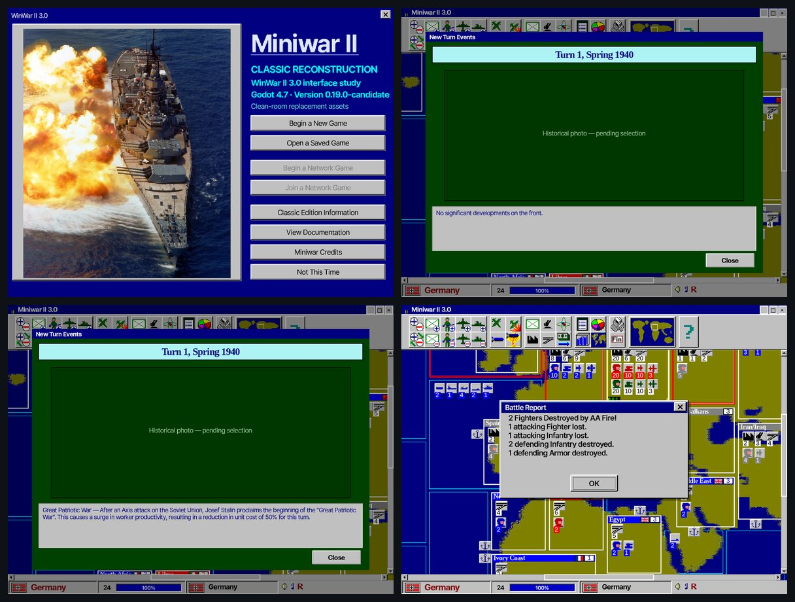

Miniwar는 브라우저 프로토타입에서 출발해 Godot로 이식되며 기능을 하나씩 복원해 왔습니다. 모든 변경은 자동 검증 스위트로 잠그고, 값은 설정 파일에서만 조정합니다.
game/js 프로토타입. node 하니스 193항목 통과 기준선.
기능 정본 복원. 데이터·로직·UI 분리 확립.
지도 이동·공격 입력, 원작형 Build Forces 생산창.
UI 캡처 세트, 전투 규칙 정비.
이 바이블의 화면들은 대부분 0.19 캡처 세트에서 가져왔습니다.
25% 중간종료 전투(한 방씩·AA 포함), 전투 결과창→AA→이벤트 팝업 흐름, 원작 사운드 9종 + 전투 배경음, 네이티브 픽셀 렌더, 메뉴 작은창 + 게임 전체화면, 드래그 패닝·가장자리 스크롤·지역 베벨, 이벤트 역사사진 배선, BGM 플레이리스트.
미니맵 위젯, 턴1 독일 재무장 + 턴2 이후 침공 분기 사진, 이벤트 캡션·역사 해설 배선, 전투 결과창 UI(국기 + 유닛 아이콘 + 시작/손실/잔존), 이벤트 없는 턴 폴백 백드롭 10종, 생산화면 국가명 가독성, 멀티언어팩(한/영) + 설정 메뉴(언어·해상도).
원작복각 100% 완료 후 어드밴스드 모드: EU4식 전장 씬, 장군 시스템, 확장 이벤트(~100), 지역 세분화.
리눅스 Godot 4.7 headless로 --import(스크립트 파싱 검증) → --export-pack으로 Miniwar.pck 생성. pck는 플랫폼 공통이라 Windows exe와 그대로 짝을 이룹니다.
엔진·캠페인·특수규칙·전투·이동 스택 회귀 스위트 실행. 웹 하니스 193항목 0 FAIL 유지가 병합 조건입니다.
밸런스 수치는 classic_rules.json 등 데이터에서만 조정하고 근거를 기록합니다. 코드에 상수를 흩지 않습니다.
GitHub push + Google Drive 빌드 보관. 버전 문자열은 project.godot에서 관리합니다.
